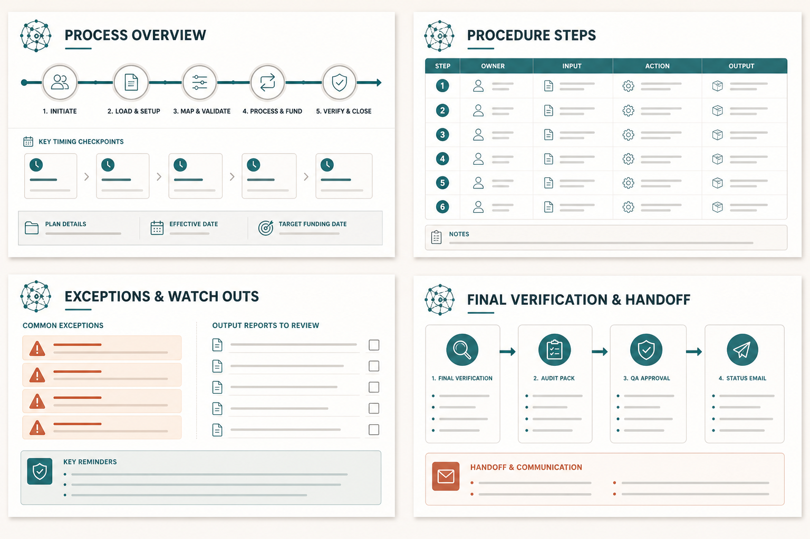
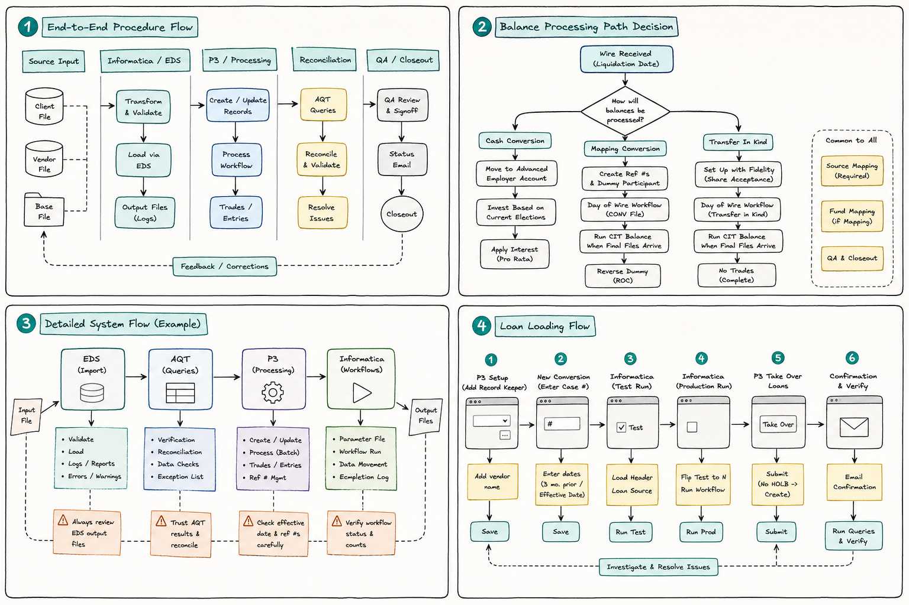
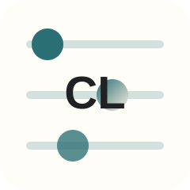
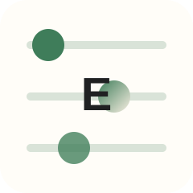
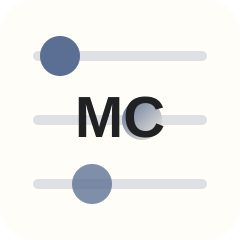
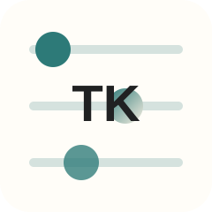
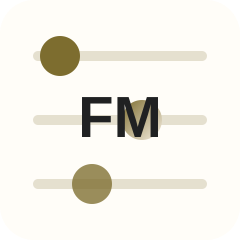

Ops Training Style
Structured slides for timing, inputs, decisions, warnings, and closeout evidence.
Two deck styles for each main procedure: a clean ops training deck and an Excalidraw-style flow deck. Markdown files are included as the source of truth for later visuals and animations.

Structured slides for timing, inputs, decisions, warnings, and closeout evidence.

Flowchart slides for sequence, system handoffs, decision branches, and gotchas.

Bring the plan population into EDS cleanly.

Default or map participant elections explicitly.
Map vendor source codes to TA source IDs.
Book the wire, hold in Advanced Employer if needed, then invest by current elections.
Turn the TOA fund map into a QA-ready purchase/ref-number file.

Use CONV and a dummy participant to hold fund-level purchases until final records arrive.

Coordinate re-registered shares through Matt O'Connell and Fidelity accounts.
Set up P3 conversion records, run Informatica, then take over loans.
Run the post-liquidation load sequence without breaking the order.
Load elections and auto-enroll state before eligibility can fire.
Enable rule-driven eligibility only after deferrals are clean.
Load Roth and after-tax basis without breaking tax history.
Get vendor files, FTP, validation, and handoff ready for go-live.
Move unfinished payroll testing to Fiduciary Services cleanly.
Use the new form-first reversal path before opening AWD.

Notify and record large trades before cut-off risk hits.
Track TC readiness from kickoff through closeout.